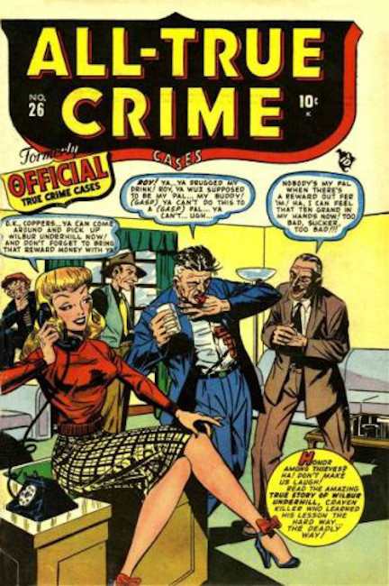
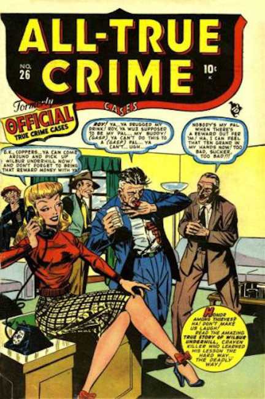

 It starts with Sub Mariner comics #1-23 then splits adding Official True Crime Cases #24-25, the becomes All True Crime Cases #26-36 and drops the cases with All True Crime #37.
Sub Mariner splits again at #31 into Amazing Mysteries # 32, while continuing as Sub Mariner until #32 where it changes names to Best Love #33.
Why they didn't just start each branch at #1 I can't say. Confusing to say the least.